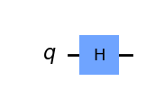

Qiskit: Variational Quantum Algorithm#
Last updated on 12/06/2023
Ref: https://learning.quantum.ibm.com/course/variational-algorithm-design
import qiskit
print(qiskit.__version__)
---------------------------------------------------------------------------
ModuleNotFoundError Traceback (most recent call last)
Cell In[1], line 1
----> 1 import qiskit
2 print(qiskit.__version__)
ModuleNotFoundError: No module named 'qiskit'
Reference state#
Classical reference state \(|\rho\rangle=001\rangle\).#
from qiskit import QuantumCircuit
qc = QuantumCircuit(3)
qc.x(0)
qc.draw()
┌───┐
q_0: ┤ X ├
└───┘
q_1: ─────
q_2: ─────
Quantum reference state \(|\rho\rangle=001\rangle\).#
qc = QuantumCircuit(3)
qc.h(0)
qc.cx(0, 1)
qc.x(2)
qc.draw()
┌───┐
q_0: ┤ H ├──■──
└───┘┌─┴─┐
q_1: ─────┤ X ├
┌───┐└───┘
q_2: ┤ X ├─────
└───┘ from qiskit.circuit.library import TwoLocal
from math import pi
reference_circuit = TwoLocal(2, "rx", "cz", entanglement="linear", reps=1)
theta_list = [pi / 2, pi / 3, pi / 3, pi / 2]
reference_circuit = reference_circuit.bind_parameters(theta_list)
reference_circuit.decompose().draw("mpl")
/var/folders/vx/2rtqxt1j1xq1b3b7ltbg_ch00000gn/T/ipykernel_4882/2905944026.py:7: DeprecationWarning: The method ``qiskit.circuit.quantumcircuit.QuantumCircuit.bind_parameters()`` is deprecated as of qiskit 0.45.0. It will be removed no earlier than 3 months after the release date. Use assign_parameters() instead
reference_circuit = reference_circuit.bind_parameters(theta_list)
from qiskit.circuit.library import TwoLocal
from math import pi
reference_circuit = TwoLocal(2, "rx", "cz", entanglement="linear", reps=1)
theta_list = [pi / 2, pi / 3, pi / 3, pi / 2]
reference_circuit = reference_circuit.assign_parameters(theta_list)
reference_circuit.decompose().draw("mpl")
Parameterized Quantum Circuits (PQC)#
from qiskit.circuit import QuantumCircuit, Parameter
theta = Parameter("θ")
qc = QuantumCircuit(3)
qc.rx(theta, 0)
qc.cx(0, 1)
qc.x(2)
qc.draw()
┌───────┐
q_0: ┤ Rx(θ) ├──■──
└───────┘┌─┴─┐
q_1: ─────────┤ X ├
┌───┐ └───┘
q_2: ──┤ X ├───────
└───┘ from math import pi
angle_list = [pi / 3, pi / 2]
circuits = [qc.assign_parameters({theta: angle}) for angle in angle_list]
for circuit in circuits:
display(circuit.draw())
┌─────────┐
q_0: ┤ Rx(π/3) ├──■──
└─────────┘┌─┴─┐
q_1: ───────────┤ X ├
┌───┐ └───┘
q_2: ───┤ X ├────────
└───┘ ┌─────────┐
q_0: ┤ Rx(π/2) ├──■──
└─────────┘┌─┴─┐
q_1: ───────────┤ X ├
┌───┐ └───┘
q_2: ───┤ X ├────────
└───┘ from qiskit.circuit.library import NLocal, CCXGate, CRZGate, RXGate
from qiskit.circuit import Parameter
theta = Parameter("θ")
ansatz = NLocal(
num_qubits=5,
rotation_blocks=[RXGate(theta), CRZGate(theta)],
entanglement_blocks=CCXGate(),
entanglement=[[0, 1, 2], [0, 2, 3], [4, 2, 1], [3, 1, 0]],
reps=2,
insert_barriers=True,
)
ansatz.decompose().draw()
┌──────────┐ ░ ┌───┐ ░ ┌──────────┐»
q_0: ┤ Rx(θ[0]) ├─────■───────░───■────■───────┤ X ├─░──┤ Rx(θ[7]) ├»
├──────────┤┌────┴─────┐ ░ │ │ ┌───┐└─┬─┘ ░ ├──────────┤»
q_1: ┤ Rx(θ[1]) ├┤ Rz(θ[5]) ├─░───■────┼──┤ X ├──■───░──┤ Rx(θ[8]) ├»
├──────────┤└──────────┘ ░ ┌─┴─┐ │ └─┬─┘ │ ░ ├──────────┤»
q_2: ┤ Rx(θ[2]) ├─────■───────░─┤ X ├──■────■────┼───░──┤ Rx(θ[9]) ├»
├──────────┤┌────┴─────┐ ░ └───┘┌─┴─┐ │ │ ░ ┌┴──────────┤»
q_3: ┤ Rx(θ[3]) ├┤ Rz(θ[6]) ├─░──────┤ X ├──┼────■───░─┤ Rx(θ[10]) ├»
├──────────┤└──────────┘ ░ └───┘ │ ░ ├───────────┤»
q_4: ┤ Rx(θ[4]) ├─────────────░─────────────■────────░─┤ Rx(θ[11]) ├»
└──────────┘ ░ ░ └───────────┘»
« ░ ┌───┐ ░ ┌───────────┐
«q_0: ──────■───────░───■────■───────┤ X ├─░─┤ Rx(θ[14]) ├──────■──────
« ┌─────┴─────┐ ░ │ │ ┌───┐└─┬─┘ ░ ├───────────┤┌─────┴─────┐
«q_1: ┤ Rz(θ[12]) ├─░───■────┼──┤ X ├──■───░─┤ Rx(θ[15]) ├┤ Rz(θ[19]) ├
« └───────────┘ ░ ┌─┴─┐ │ └─┬─┘ │ ░ ├───────────┤└───────────┘
«q_2: ──────■───────░─┤ X ├──■────■────┼───░─┤ Rx(θ[16]) ├──────■──────
« ┌─────┴─────┐ ░ └───┘┌─┴─┐ │ │ ░ ├───────────┤┌─────┴─────┐
«q_3: ┤ Rz(θ[13]) ├─░──────┤ X ├──┼────■───░─┤ Rx(θ[17]) ├┤ Rz(θ[20]) ├
« └───────────┘ ░ └───┘ │ ░ ├───────────┤└───────────┘
«q_4: ──────────────░─────────────■────────░─┤ Rx(θ[18]) ├─────────────
« ░ ░ └───────────┘ from qiskit import QuantumCircuit
from qiskit.quantum_info import SparsePauliOp
# The following code will work for any other initial single-qubit state and observable
original_circuit = QuantumCircuit(1)
original_circuit.h(0)
H = SparsePauliOp(["X", "Z"], [2, -1])
aux_circuits = []
for pauli in H.paulis:
aux_circ = original_circuit.copy()
aux_circ.barrier()
if str(pauli) == "X":
aux_circ.h(0)
elif str(pauli) == "Y":
aux_circ.sdg(0)
aux_circ.h(0)
else:
aux_circ.id(0)
aux_circ.measure_all()
aux_circuits.append(aux_circ)
original_circuit.draw("mpl")

# Auxiliary circuit for X
aux_circuits[0].draw('mpl')

from qiskit.primitives import Sampler, Estimator
from qiskit.circuit.library import IGate, ZGate
import numpy as np
## SAMPLER
sampler = Sampler()
job = sampler.run(aux_circuits)
probability_dists = job.result().quasi_dists
expvals = []
for dist, pauli in zip(probability_dists, H.paulis):
val = 0
if str(pauli) == "I":
Lambda = IGate().to_matrix().real
else:
Lambda = ZGate().to_matrix().real
val += Lambda[0][0] * dist.get(0, 0)
val += Lambda[1][1] * dist.get(1, 0)
expvals.append(val)
print("Sampler results:")
for (pauli, expval) in zip(H.paulis, expvals):
print(f" >> Expected value of {str(pauli)}: {expval:.5f}")
total_expval = np.sum(H.coeffs * expvals).real
print(f" >> Total expected value: {total_expval:.5f}")
## ESTIMATOR
observables = [
*H.paulis,
H,
] # Note: run for individual Paulis as well as full observable H
estimator = Estimator()
job = estimator.run([original_circuit] * len(observables), observables)
estimator_expvals = job.result().values
print("Estimator results:")
for (obs, expval) in zip(observables, estimator_expvals):
if obs is not H:
print(f" >> Expected value of {str(obs)}: {expval:.5f}")
else:
print(f" >> Total expected value: {expval:.5f}")
Sampler results:
>> Expected value of X: 1.00000
>> Expected value of Z: 0.00000
>> Total expected value: 2.00000
Estimator results:
>> Expected value of X: 1.00000
>> Expected value of Z: 0.00000
>> Total expected value: 2.00000
from qiskit import QuantumCircuit
from qiskit.quantum_info import SparsePauliOp
from qiskit.circuit.library import TwoLocal
import numpy as np
theta_list = (2 * np.pi * np.random.rand(1, 8)).tolist()
observable = SparsePauliOp.from_list([("XX", 1), ("YY", -3)])
reference_circuit = QuantumCircuit(2)
reference_circuit.x(0)
variational_form = TwoLocal(
2,
rotation_blocks=["rz", "ry"],
entanglement_blocks="cx",
entanglement="linear",
reps=1,
)
ansatz = reference_circuit.compose(variational_form)
ansatz.decompose().draw('mpl')
/Users/pcchen/miniforge3/lib/python3.10/site-packages/qiskit/visualization/circuit/matplotlib.py:266: FutureWarning: The default matplotlib drawer scheme will be changed to "iqp" in a following release. To silence this warning, specify the current default explicitly as style="clifford", or the new default as style="iqp".
self._style, def_font_ratio = load_style(self._style)
def cost_func_vqe(params, ansatz, hamiltonian, estimator):
"""Return estimate of energy from estimator
Parameters:
params (ndarray): Array of ansatz parameters
ansatz (QuantumCircuit): Parameterized ansatz circuit
hamiltonian (SparsePauliOp): Operator representation of Hamiltonian
estimator (Estimator): Estimator primitive instance
Returns:
float: Energy estimate
"""
cost = estimator.run(ansatz, hamiltonian, parameter_values=params).result().values[0]
return cost
from qiskit_ibm_runtime import QiskitRuntimeService, Estimator, Session
# Add your token below
service = QiskitRuntimeService(
channel="ibm_quantum"
)
backend = service.backend("ibmq_qasm_simulator")
session = Session(backend=backend)
# Use estimator to get the expected values corresponding to each ansatz
estimator = Estimator(session=session)
---------------------------------------------------------------------------
AccountNotFoundError Traceback (most recent call last)
Cell In [6], line 4
1 from qiskit_ibm_runtime import QiskitRuntimeService, Estimator, Session
3 # Add your token below
----> 4 service = QiskitRuntimeService(
5 channel="ibm_quantum"
6 )
8 backend = service.backend("ibmq_qasm_simulator")
9 session = Session(backend=backend)
File ~/miniforge3/lib/python3.10/site-packages/qiskit_ibm_runtime/qiskit_runtime_service.py:174, in QiskitRuntimeService.__init__(self, channel, token, url, filename, name, instance, proxies, verify, channel_strategy)
131 """QiskitRuntimeService constructor
132
133 An account is selected in the following order:
(...)
170 IBMInputValueError: If an input is invalid.
171 """
172 super().__init__()
--> 174 self._account = self._discover_account(
175 token=token,
176 url=url,
177 instance=instance,
178 channel=channel,
179 filename=filename,
180 name=name,
181 proxies=ProxyConfiguration(**proxies) if proxies else None,
182 verify=verify,
183 channel_strategy=channel_strategy,
184 )
186 self._client_params = ClientParameters(
187 channel=self._account.channel,
188 token=self._account.token,
(...)
192 verify=self._account.verify,
193 )
195 self._channel_strategy = channel_strategy or self._account.channel_strategy
File ~/miniforge3/lib/python3.10/site-packages/qiskit_ibm_runtime/qiskit_runtime_service.py:289, in QiskitRuntimeService._discover_account(self, token, url, instance, channel, filename, name, proxies, verify, channel_strategy)
287 if url:
288 logger.warning("Loading default %s account. Input 'url' is ignored.", channel)
--> 289 account = AccountManager.get(filename=filename, name=name, channel=channel)
290 elif any([token, url]):
291 # Let's not infer based on these attributes as they may change in the future.
292 raise ValueError(
293 "'channel' is required if 'token', or 'url' is specified but 'name' is not."
294 )
File ~/miniforge3/lib/python3.10/site-packages/qiskit_ibm_runtime/accounts/management.py:208, in AccountManager.get(cls, filename, name, channel)
200 issue_deprecation_msg(
201 msg="Use of the ~/.qiskit/qiskitrc.json file is deprecated.",
202 version="0.15.0",
203 remedy="Please use the ~/.qiskit/qiskit-ibm.json file instead.",
204 period="1 month",
205 )
206 return cls._from_qiskitrc_file()
--> 208 raise AccountNotFoundError("Unable to find account.")
AccountNotFoundError: 'Unable to find account.'